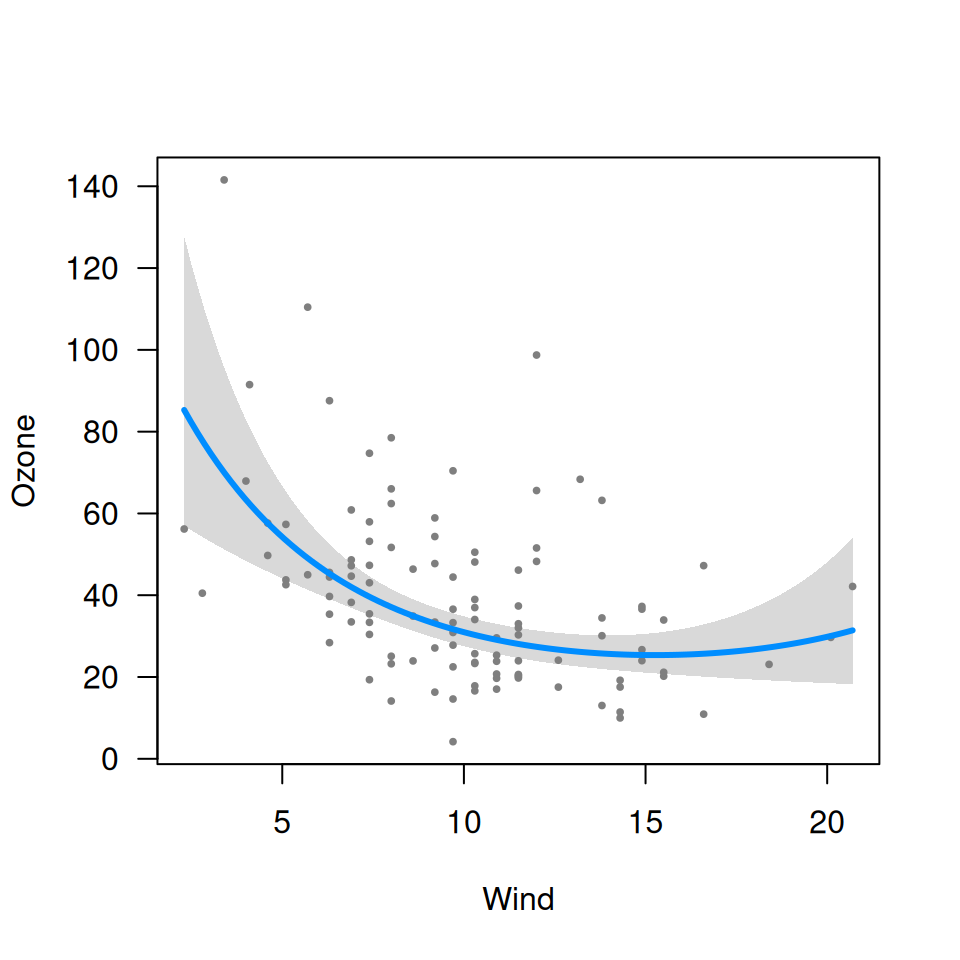

Getting started described how
visreg provides a visual summary of a model, somewhat akin
to the numerical summary you get from summary(fit). For
nonlinear terms, however, it is usually difficult to interpret numerical
summaries, and visual representations become far more important.
Nonlinear terms
For example, suppose we allow the effect of wind on ozone to be nonlinear by introducing a quadratic term into the model:

Note that visreg automatically detects the nonlinear
relationship and represents this correctly in the plot. This should work
for any transformation you can think of; here are some examples:
fit <- lm(Ozone ~ Solar.R + Wind + Wind*I(Wind > 10) + Temp, data=airquality)
visreg(fit, "Wind", print.cond=FALSE)
library(splines)
fit <- lm(Ozone ~ Solar.R + ns(Wind, df=3) + Temp, data=airquality)
visreg(fit, "Wind")If you ever run across a kind of transformation that produces an
error in visreg, please tell us about
it and we will fix it ASAP.
Transformations of the outcome
Another kind of nonlinear model arises when the outcome is transformed, but we are interested in plotting the relationship on the original scale. For example, ozone levels must be positive. However, as the GAM on the front page illustrates, some models may result in predictions or confidence band that fall below 0. One way of remedying this is to model the log of ozone concentrations instead of the ozone concentrations directly:
fit <- lm(log(Ozone) ~ Solar.R + Wind + Temp, data=airquality)
visreg(fit, "Wind", trans=exp, ylab="Ozone", partial=TRUE)Note that here, the plotting involves an inverse transformation.
There is no automatic way for visreg to know what the
correct inverse transformation is (except for GLMs), so this must be supplied as a function.
Also note that by default, visreg turns off partial
residuals when trans is specified, as this can provide a
distorted view of outliers (a mild outlier can become an extreme outlier
once a transformation has been applied, and vice versa), but we include
them here by explicitly specifying partial=TRUE. This is
discussed in greater depth in the page on GLMs.
Combining nonlinear terms with transformations
As one would hope, nonlinear terms and outcome transformations can be combined and visualized in a straightforward manner:
fit <- lm(log(Ozone) ~ Solar.R + Wind + I(Wind^2) + Temp, data=airquality)
visreg(fit, "Wind", trans=exp, ylab="Ozone", partial=TRUE)